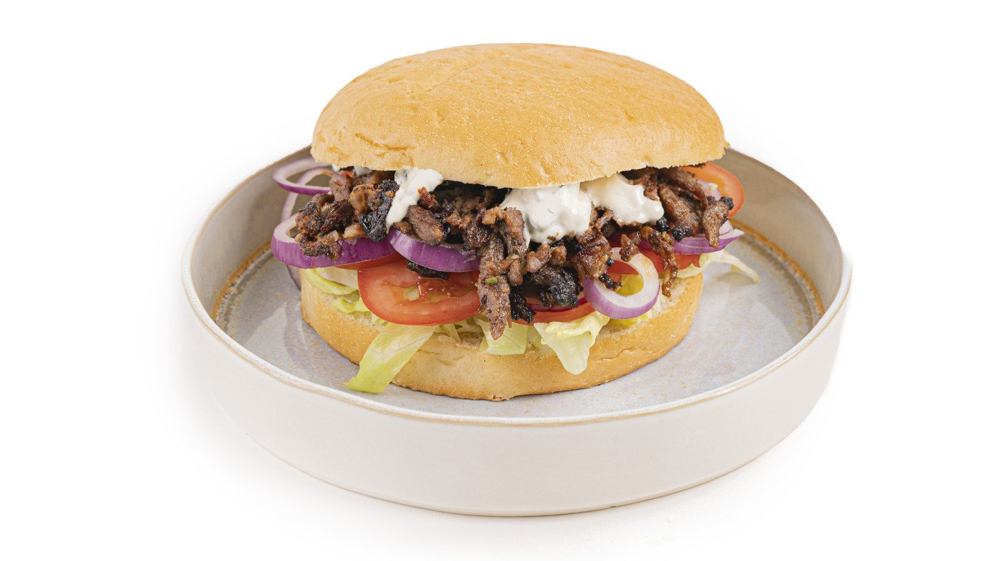

Greek Gyros

Picture the sizzle of the grill, the aroma of perfectly seasoned pork slices slowly charring over hot coals,
and the anticipation of sinking your teeth into a mouthwatering Gyros sandwich.
From the moment you fire up the BBQ, you'll be transported to an outdoor taverna in Greece,
where the air is filled with the enticing scents of charred meat and fragrant herbs.
Ingredients
- 3 kg / 6.6 lbs pork neck
- 250 grams / 8.8 oz Gyros Rub
- 50 grams / 1.8 oz fresh chives
- 30 grams / 1 oz fresh oregano
- 1 red onion
- 2 cloves of garlic
- 1 lemon
- 1 white onion
- 8 small turkish breads
- 75 grams / 2.6 oz fresh lettuce
- 4 tomatoes
- 500 ml / 2 cups Tzaziki Sauce
How to..
- Slice up 3 kg of pork neck into thin slices.
- Make 250 grams or 8.8 oz of Gyros Rub according to it's recipe.
- Chop up 50 grams or 1.8 oz of fresh chives and 30 grams or 1 oz of fresh oregano.
- Layer out some butchers paper or baking paper on a large table and layer out all the individual slices of pork neck next to each other.
- Apply a nice and thick coating of gyros rub on all the pork slices and continue without flipping them by applying the chives and oregano as well.
- Use a microplane to grate 1 red onion on top of the sliced pork and repeat this process with 2 cloves of garlic as well.
- Squeeze out 1 lemon on top off the meat and work in all those flavors by pressing your hands on top of the pork.
- Grab your rotisserie skewer and place half a white onion on the bottom on top of the pins. Slide each individual slice of pork on the skewer and make sure that the seasoning is always pointed upwards.
- Work your way upwards until all the meat is equally dividend and place the other half of the onion and the pins on top to secure it.
- Fire up your BBQ and set your back burner to the lowest setting while de indirect heat of the side burners is running at a low setting as well.
- Close the lit and let your gyros rotate for about 30 minutes.
- Slice up 4 tomatoes, 75 grams or 2.6 oz of lettuce and 2 red onions into rings.
- Make 500 ml or 2 cups Tzatziki Sauce according to it's recipe
- Now the outside has crunched up and it's time to slide in a tray and slice of your first batch of gyros. This will make the rotisserie more equally shaped.
- Set the back burner or other direct heat source to full throttle and keep on building up that crust while slicing it off when it's ready.
- Prepare some Turkish bread and cut it in half. Stuff it with the thin sliced gyros, some lettuce, sliced tomato and a big handful of gyros. Put some fresh Tzatziki Sauce on top and your traditional gyros sandwich is done.